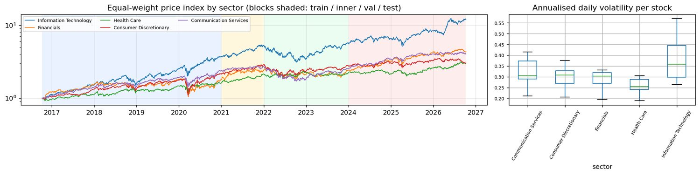
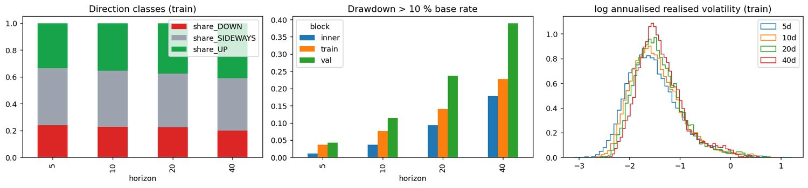
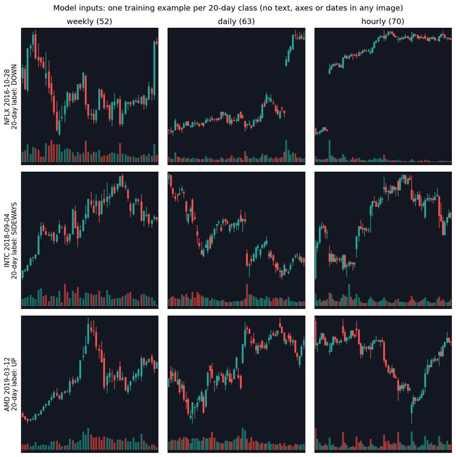
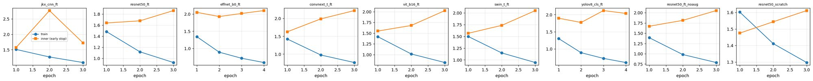
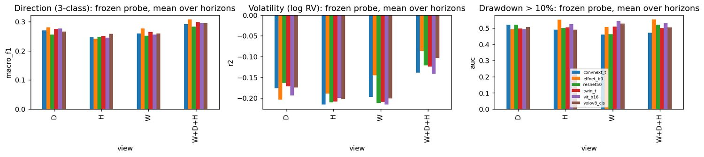
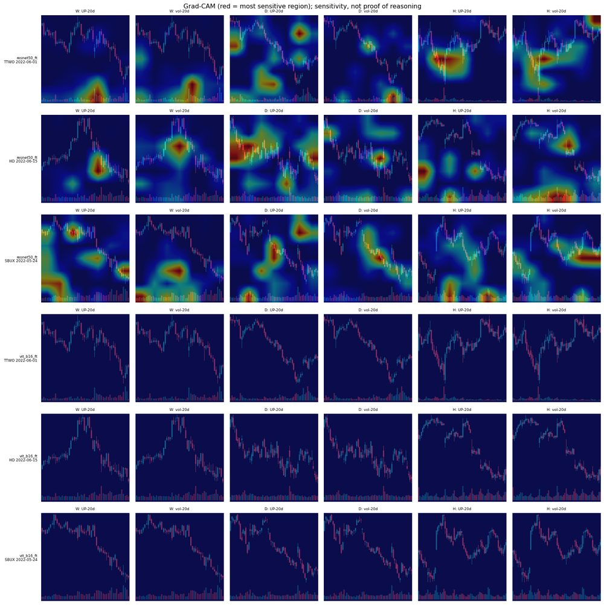
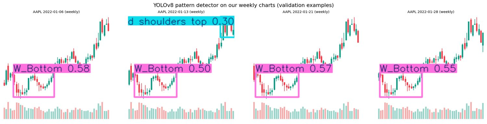
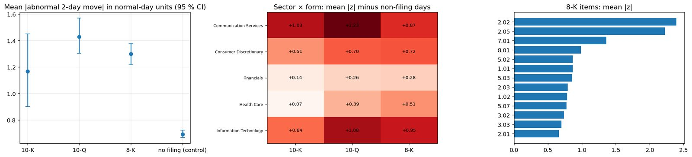
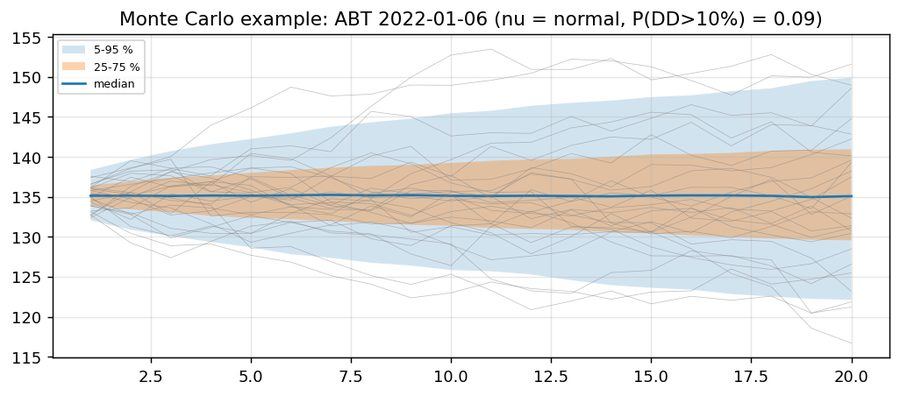

NEXUS Alpha v3: can AI read charts and filings to forecast stocks?
The project compares 7 computer-vision networks that look at candlestick charts with 6 language models that read SEC filings. Every model predicts the same things for the same 50 stocks: direction, volatility and the risk of a 10% fall over 5, 10, 20 and 40 trading sessions. Everything was chosen on 2022–2023 and scored once on a locked 2024–2026 test. This page walks through every step and the reason behind it.
00The whole pipeline on one page
Read this diagram first. Every later section zooms into one box. Two ideas run through all of it. The data are point in time: no input ever contains information from after the decision moment. And the test is locked: its labels sit in a vault until every choice has been frozen and hashed.
The study answers ten project questions (Q1–Q10) through pre-registered hypotheses H1–H7. These were written down before any data were loaded. Questions that came up after the test was opened got new, clearly labelled hypotheses (H1c onward).
01Data sourcing: what we used and why
Prices
The price data come from TriFrame's frozen tier-A bars, packaged as nav3_bars_66.zip. The package holds 50 study stocks, 16 same-sector reserves and SPY. The source chain starts with a Finnhub-derived 1-minute feed, cleaned and aggregated to regular-hours hourly bars (7 per session, aligned to 09:30 New York). Daily and weekly bars are built from those, with Yahoo used to fill gaps. The data run to 2026-10-09, and the package's SHA-256 hash is pinned in the notebook.
Every stock must pass these validation tests or the run stops:
- dates are unique and sorted;
- OHLC values are consistent and prices are positive;
- hourly bars start at :30, with at most 7 per session;
- every hourly session is also a daily session;
- the daily close matches the last hourly close (in at least 95% of sessions, within 0.1%);
- no session is missing against the market calendar.
Which 50 stocks
The stocks come from the brief's list: 10 in each of Information Technology, Financials, Health Care, Consumer Discretionary and Communication Services. Seven names had no ten-year hourly history and were swapped for same-sector stocks:
- AVGO→TXN, CRM→ADBE, BKNG→MAR, CMCSA→META;
- TMUS→OMC, EA→NYT, GOOGL→GOOG.
An SEC availability rule was fixed before any text was downloaded. Between 2016 and the data end, a stock needs at least 8 10-Ks, 20 10-Qs and 10 8-Ks, or it is replaced by the first reserve in its sector that passes.

Filings
We use original 10-K, 10-Q and 8-K filings (no amendments) from SEC EDGAR, from 2015-06 to the data end. Section 06 explains how they are timestamped and cleaned.
02Decisions and labels: what exactly is predicted
Decision time is the close of session t, after the last hourly bar. Every input uses only what was known at that moment. For each horizon h ∈ {5, 10, 20, 40} sessions there are three targets:
| Target | Definition | Why this choice |
|---|---|---|
| Direction 3 classes | r = log(Ct+h/Ct). UP if r > 0.5·σt·√h, DOWN if r < −0.5·σt·√h, otherwise SIDEWAYS. σt is the standard deviation of the last 60 daily log returns. | Scaling by the stock's own volatility makes "sideways" mean the same for a calm utility-like stock and for NVDA. k = 0.5 gives roughly balanced classes (about 40% SIDEWAYS). |
| Volatility regression | Log of annualised realised volatility over t+1…t+h, from hourly returns plus the overnight return. | Hourly data give a much less noisy volatility estimate than h daily returns. The log makes the target close to normally distributed. |
| Drawdown binary | 1 if the lowest low in t+1…t+h is more than 10% below Ct. | This is the risk question an investor actually asks. It is rare: 4% at 5 sessions and 23% at 40 in training. |
Rows. Evaluation rows use every 5th session, so 5-session labels never overlap within a stock. Training rows use every session (51,250 chart rows). That gives more chart variety, and overlapping labels are fine for fitting but never for scoring.

03Time blocks and leakage control
The vault
Once the labels are built, every test label is moved into a VAULT object and replaced by NaN in the working table. Nothing before §23 can read it. The vault opens only after the freeze manifest exists, and every opening is logged: 16 openings over 8 executions, all from re-runs of the same frozen pipeline. Seven leakage tests must pass:
| Check | What it guards against | Result |
|---|---|---|
| purge train → inner, inner → val, val → test | a training label window overlapping a later block's outcomes | 3 × passed |
| test labels hidden | any code reading test outcomes before the freeze | passed |
| unique stock-dates | duplicate rows inflating scores | passed |
| evaluation rows non-overlapping at 5 sessions | overlapping labels shrinking confidence intervals | passed |
| labels ignore past bars | a label that changes when history is edited (it must depend only on the future) | passed |
Charts and indicators are also tested for causality. Truncating the future, or perturbing bars after t, must leave the image and the features unchanged.
04Chart images: the vision models' input
Each row becomes three 224×224 images, drawn by one shared renderer (nav3_core.py). The dashboard runs the same renderer, so training, validation, test and the live app all draw identical pictures.
The rendering contract
- Weekly: 52 candles. The last one is the week in progress, built only from days ≤ t.
- Daily: 63 candles (about 3 months).
- Hourly: 70 candles (10 sessions).
- Dark theme, teal up and red down candles, volume panel at the bottom.
- No text, axes, dates or tickers.
Why no text
Any date, price level or ticker in the picture could let a network memorise "which stock, when" instead of learning a shape. With only the candles, whatever it learns has to come from price action.
Image tests
Rendering must be deterministic. A stored image must equal a fresh render. No chart may be blank. Changing bars after t must leave the image unchanged.

05Computer-vision models
The seven networks span the main design choices in vision: trained from scratch versus pretrained, CNN versus transformer, and small versus large. That spread lets the study say which kind of network reads charts best, not just whether one network works.
| Network | Family | Why it is in the study |
|---|---|---|
| jkx_cnn | small CNN from scratch | Replicates the Jiang, Kelly & Xiu (2023) "(Re-)Imag(in)ing Price Trends" design: the reference point from the literature. |
| ResNet-50 | classic CNN, ImageNet | The standard transfer-learning baseline. Also used for the scratch and no-augmentation ablations. |
| EfficientNet-B0 | small, efficient CNN | Tests whether a small network is enough. It is also the cheapest to deploy. |
| ConvNeXt-Tiny | modern CNN | A CNN with transformer-era training tricks. Best for direction. |
| ViT-B/16 | vision transformer | Global attention over 16 px patches, with no built-in locality bias. |
| Swin-T | hierarchical transformer | Windowed attention, a middle ground between CNN and ViT. |
| YOLOv8s-cls | YOLO classifier | The family behind popular "chart pattern" detectors. A ready-made YOLOv8 pattern detector is also tested zero-shot. |
Two-step transfer learning
Training recipe (identical for all seven)
- Optimiser: AdamW with weight decay 0.05, 5% linear warm-up then cosine decay, gradient clipping at 1.0, bfloat16, batch of 64 rows (192 images).
- Tuning: a two-value learning-rate probe per model. Each value trains for one epoch on 25% of the training rows, and the one with the lower inner-block loss wins.
- Early stopping: up to 6 epochs, patience 2, stopping on the 2021 inner loss, never on validation.
- No class weights: they would distort the calibrated probabilities.
Allowed augmentation
- Vertical rescale ±5% and shift ±4%, because the price scale is arbitrary.
- Dropping up to 8% of the oldest bars. The newest bars are never cut.
- Brightness ±10% and light pixel noise.
Forbidden augmentation
- Horizontal flip: it reverses time.
- Vertical flip: it turns rallies into crashes.
- Random crops that cut the newest bars, which carry the decision.

Which view carries the signal?

What the networks look at

The ready-made YOLOv8 pattern detector (zero-shot)

06SEC filings: getting the timestamps right
A filing can only help a forecast once the market can read it, so the hardest part of the text pipeline is when.
Cleaning and sections
- HTML is converted to text, with scripts, inline-XBRL headers and mostly-numeric tables removed.
- 10-K: Item 7, MD&A. 10-Q: Part I Item 2, MD&A. Banks often put the MD&A in Exhibit 13, which is fetched too.
- 8-K: the item text plus the first EX-99 exhibit (usually the press release), keeping the item codes (2.02 results, 5.02 officers and so on).
- The model input is tagged
[form] [section] text.
Two ways text meets prices
Event rows (§14)
Every filing is its own row. The question is what happens after this filing. This is the setting language models are normally tested in, and it drives the event study.
Panel rows (§19)
Each daily decision row gets the latest 10-K/10-Q (if under 90 sessions old) and the latest 8-K (if under 20 sessions old). This puts CV, NLP and fusion on identical rows, the only fair way to compare them.
Event study: do filings move prices? (H7)

07Language models
| Model | What it is | Why it is in the study |
|---|---|---|
| TF-IDF + logistic/ridge | bag of words | The classic text baseline. It is transparent, since you can read which words matter (Q8). |
| FinBERT | BERT trained on financial text | Domain pre-training on finance. |
| SEC-BERT | BERT trained on SEC filings | Domain pre-training on exactly this kind of document. |
| RoBERTa-large | large general encoder | Tests whether size beats domain knowledge. |
| Longformer | 4,096-token window | MD&A sections are long, and this tests whether more context helps. |
| DeBERTa-v3-large | strongest general encoder | State of the art on language-understanding benchmarks. Its fine-tuning was unstable at our data size. |
| FinGPT | LLM (Llama 2 based), frozen in 4-bit | Tests whether a generative financial LLM adds anything as a feature extractor. |
Fine-tuning mirrors the vision setup:
- the same multi-task head and loss, with masked mean pooling;
- 512 tokens per filing (Longformer 4,096);
- AdamW with weight decay 0.01 and 6% warm-up;
- a two-value learning-rate probe on the inner block.
The TF-IDF + logistic/ridge baseline is not a neural network, so the count is "6 language models plus TF-IDF".
08Baselines, metrics and statistics
Baselines: every deep model must beat these
- Prior: always predict the training class shares.
- Momentum: recent return → direction.
- HAR and trailing volatility: volatility today predicts volatility tomorrow.
- Technical LightGBM: technical indicators such as RSI, ATR, moving averages and trailing volatility, fed to gradient-boosted trees.
- Random-weight CNN and label-shuffle controls: these show what "no learning" looks like.
Metrics and why each one
| Target | Primary | Secondary | Why |
|---|---|---|---|
| Direction | Macro-F1 | log loss, balanced accuracy, accuracy | Plain accuracy rewards always saying SIDEWAYS. Macro-F1 forces the model to find UP and DOWN moves. |
| Volatility | R² | QLIKE, Spearman, MAE | QLIKE is the standard volatility-forecast loss, and it is robust to noisy targets. |
| Drawdown | ROC-AUC | PR-AUC, Brier skill, ECE | The event is rare. AUC measures ranking, and Brier skill and ECE measure whether the probabilities are honest. |
How significance is decided
- Paired month-block bootstrap: whole months are resampled, because returns within a month are correlated. Resampling rows would make the intervals too narrow.
- Holm correction within each hypothesis family of 12 tasks, because testing 12 tasks at 5% gives about one false positive by luck.
- Skill over a shuffled null: direction skill is measured as macro-F1 above the same model on shuffled labels. This removes the class-balance effect.
- Re-calibration on the inner block: temperature scaling (direction), linear (volatility) and Platt (drawdown), so the probabilities mean what they say.
09Fusion and the Monte Carlo price range
Deploy recipe: what the dashboard runs
The dashboard always runs the top-3 CV ensemble per task. When a filing is fresh (pasted in the app, or less than 5 sessions old in the study), it is blended with the top-3 deployable NLP models (TF-IDF, or fine-tuned encoders with at most 600M parameters) using the validation-chosen weights. FinGPT and DeBERTa-large are excluded from deployment because of their size and cost.
Monte Carlo price paths
Twenty daily log returns are simulated as drift plus scale × standardised noise:
- The scale comes from the recipe's 20-day volatility forecast.
- The drift is solved so that the simulated DOWN/SIDEWAYS/UP shares at day 20 match the recipe's probabilities.
- Intraday lows come from the exact Brownian-bridge minimum.
The bands under-covered at first (74% and 83% for the nominal 80% and 90% bands). A volatility scale of 1.25 was then chosen on validation, and on the test the 80% and 90% bands contained the realised outcome 82.6% and 90.8% of the time.

10Freeze and the locked test
Before the vault opens, a freeze manifest records:
- every selection: best models, top-3 members, fusion weights and the Monte Carlo tail setting;
- the SHA-256 of every prediction file (test predictions already exist at this point, but their labels do not);
- the configuration hash, the data hash, the shared-code hash and the package versions.
§23 refuses to run without the manifest. A reproducibility check compares every re-run against the original. It reported 11 of 11 identical.
Pre-registered hypotheses on the test
| Hypothesis | Tests | Supported | Verdict |
|---|---|---|---|
| H1 CV has skill | 12 | 6 | partly |
| H2 NLP has skill (events) | 12 | 4 | partly |
| H2b NLP has skill (panel) | 12 | 4 | partly |
| H3 fusion beats the better single modality | 12 | 6 | partly |
| H4 top-3 + top-3 beats top-3 CV | 12 | 3 | partly |
| H5 fine-tuning beats frozen | 18 | 9 | partly |
| H6 sector-specific rankings | 3 | 2 | partly |
| H7 filings move prices | 2 | 2 | supported |
"Skill" in H1 and H2 means beating the prior and shuffled-label null, not beating strong baselines. That gap is why the post-hoc addenda in section 11 were needed.
11Post-hoc addenda: making it rigorous
| Phase | Question a professor would ask | What we did | Answer |
|---|---|---|---|
| A | Your baselines are weak. Do charts and text beat strong numbers? | No-text event baselines (company, simple, technical LightGBM), H1c/H2c/H3c, incremental value H8 | Volatility and drawdown: numbers win. NLP drawdown signal vanishes (0/4). Adding features to LightGBM helps volatility (+0.06 to +0.09 R²). |
| A2 | Is that volatility gain just the earnings calendar or the company? | Filing-date columns (H8d) and company one-hot controls (H8e/f); a fair direction test H1d against each model's own shuffled null | The calendar alone gives the gain (4/4). The words add about +0.013 R² (2/4), and only 1/4 survives beyond calendar + company. CV direction is better than baseline in 1/4. |
| A2d | Show accuracy, balanced accuracy and calibration too | Secondary-metric tables | CV direction accuracy is about the majority class (41.6% vs 42.0%). The edge is in finding UP and DOWN moves. |
| A3 / A3b | Did you try combining networks? Is there anything in the words themselves? | 63 combinations per modality (H9), Lazy Prices text change and Loughran-McDonald tone (H10), a reaction-size regression with company control (H11) | CV combinations win 5/12 (mostly volatility), NLP combinations 0/12, cross-modal 2/12 (drawdown). The words explain reaction size beyond company: +0.043 R² [0.029, 0.058]. |
12What we found, in plain words
Charts see a little direction
There is a small but statistically supported direction signal at 5 and 10 sessions: about +0.03 macro-F1 over a shuffled null. ConvNeXt-Tiny is the best single network for direction. Against fair baselines, charts win at 1 of 4 horizons (5 sessions).
Numbers beat pictures for risk
For volatility and drawdown, trailing volatility and technical indicators beat the chart models in all 8 tasks. Volatility R² is about 0.08 for CV versus 0.30–0.37 for the numbers, and drawdown AUC about 0.60 versus 0.69–0.70. The likely cause is the per-chart price scaling.
Text models mostly learn shortcuts
The language models showed no direction or volatility skill of their own. Their drawdown signal disappears once company and timing are controlled. TF-IDF is competitive with the large transformers.
Filings do move prices
Filing days move prices about 2× as much as normal days, with 10-Qs moving them most. The words explain part of how big the reaction is (+0.043 R² beyond company), but not its direction.
Combining helps a little, and where it helps matters
Combining vision networks helps volatility. Combining language models never helps. Adding text to charts helps only drawdown, in 2 of 12 tasks.
Probabilities rank risk, levels are rough
Drawdown AUC is 0.54–0.63, but Brier skill is ≤ 0 against the training base rate. Use the drawdown numbers as relative risk. The Monte Carlo bands are well calibrated after the 1.25 scale.
13The Streamlit dashboard
The dashboard turns the frozen study into a tool. It runs exactly the recipe that was tested: the code that draws charts and makes predictions is the notebook's own nav3_core.py, and §24 checks numerically that both give the same answers (dashboard_parity.csv).
Why charts are redrawn
A broker screenshot has different colours, fonts, indicators and zoom from the training charts. The robustness tests (§12.7) show those differences can move predictions. So screenshots are read only for the ticker and date, and the models always see the exact training format.
Why live data works with frozen models
The models learned what a chart looks like, so they only need the latest window of bars. Yahoo data are fetched when you click Analyse. Dates after 2026-08 are new data outside the test, so the evidence badges describe the 2024–26 test, not live performance.
Honesty features
- Every number has an evidence badge showing whether it was proven on the test.
- Candlestick patterns are shown as descriptive only: they are not used by the models and not tested.
- The no-call rule applies.
Engineering details
- Dark and light themes, and a black chart panel.
- A Reset-view button for the chart.
- Low-memory mode: loads one NLP model at a time, so it runs on a 15 GB laptop without a GPU.
- Ask AI: a free Gemini key, kept for the session only.
14The three reports
Computer Vision report
- Chart design and the seven networks.
- Training curves, leaderboard, view ablation, Grad-CAM, robustness.
- Sectors (H6) and the fair direction comparison (H1d).
- Secondary metrics (5b), combinations (H9a).
- The scaling design finding, ethics (AGPL for YOLOv8).
NLP report
- Opens with the event study (H7).
- Point-in-time text, the six models, training stability (DeBERTa).
- Shortcut learning (H2c), calendar and company controls (H8d–f).
- Lazy Prices and Loughran-McDonald (H10), H11 with company control.
- Ethics: SEC fair access, Llama 2 licence.
Multimodal report
- Q1 and Q10: CV vs NLP vs fusion on identical rows.
- Late, early and tech fusion, H3/H4, cross-modal grid (H9c).
- Monte Carlo coverage.
- The dashboard recipe and the no-call rule.
- Hypothesis register and the v3.1 protocol (section 10).
Every report text is generated from the run's own result files, so the PDFs cannot drift from the numbers. The final versions are the Phase A3b run, frozen in Downloads\NEXUS_Alpha_v3_FINAL_PhaseA3b.
15Limitations and future work
Limitations
- 50 large surviving US stocks (survivorship bias)
- One decade, with a regime change between validation (2022 bear market) and test (strong 2024–26)
- One training seed per model
- Prices not dividend-adjusted
- Direction labels are noisy, and a 3-class band hides magnitude
- MD&A extraction is heuristic, and FinGPT is frozen
- Event reactions mix filings with same-day news
- No trading costs or portfolio test (this is a forecasting study)
Future work (v3.1, pre-registered)
- New forward test period, several seeds
- Fixed-scale charts, so volatility becomes visible to the CNNs
- Stabilised fine-tuning, QLoRA for FinGPT
- Minute-stamped news next to filings
- Small caps and delisted stocks
- Walk-forward refits each year
- Other image encodings (Gramian angular fields)
- Position sizing from the volatility and drawdown heads, with costs
16Viva practice: likely questions
Try answering each question out loud before opening it.
What is the research gap?
How did you prevent leakage? Give at least five mechanisms.
- Decisions are made at the close.
- Images and indicators are tested by truncation and future-bar perturbation.
- A 40-session purge separates the blocks.
- Test labels sit in a vault, opened only after a hashed freeze.
- Filings are usable only after acceptance + 35 min, with entry at the next hourly open.
- The test period comes after all language-model cut-offs.
Why macro-F1 and not accuracy?
Your CV model beats the baselines by up to 0.14 macro-F1. Is that fair?
Why did every network peak after one epoch?
What does transfer learning buy you here?
Is the text's drawdown signal just the company name?
Did combining networks help?
How do you know the dashboard gives the same numbers as the study?
dashboard_parity.csv).